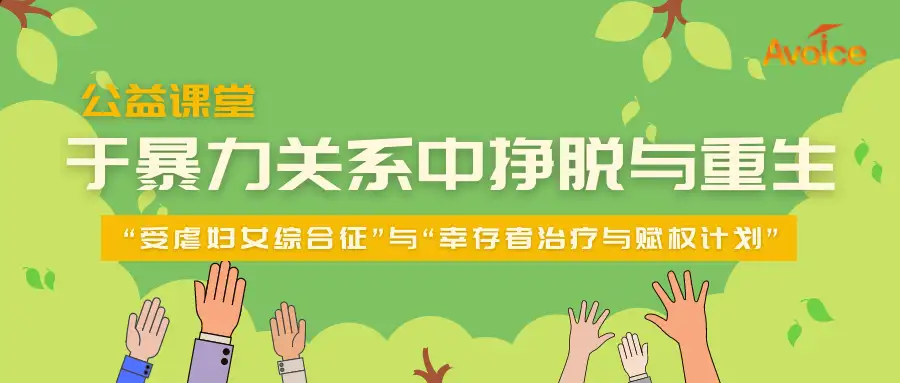
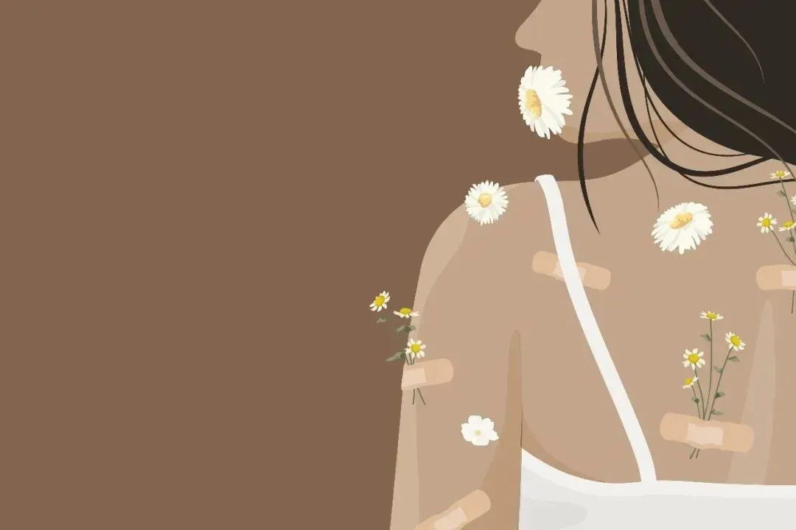
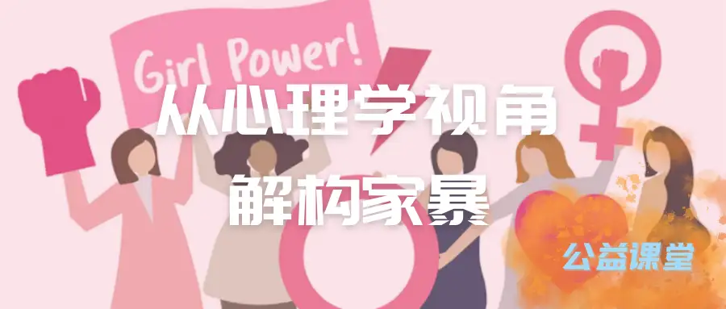
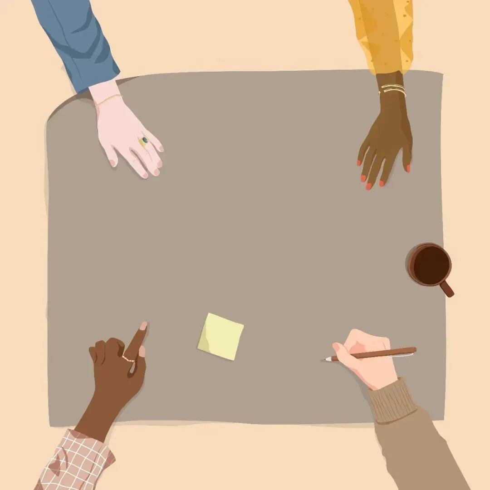
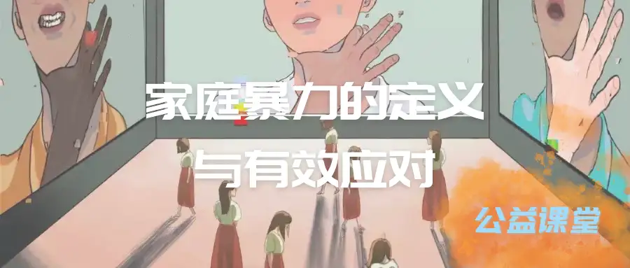
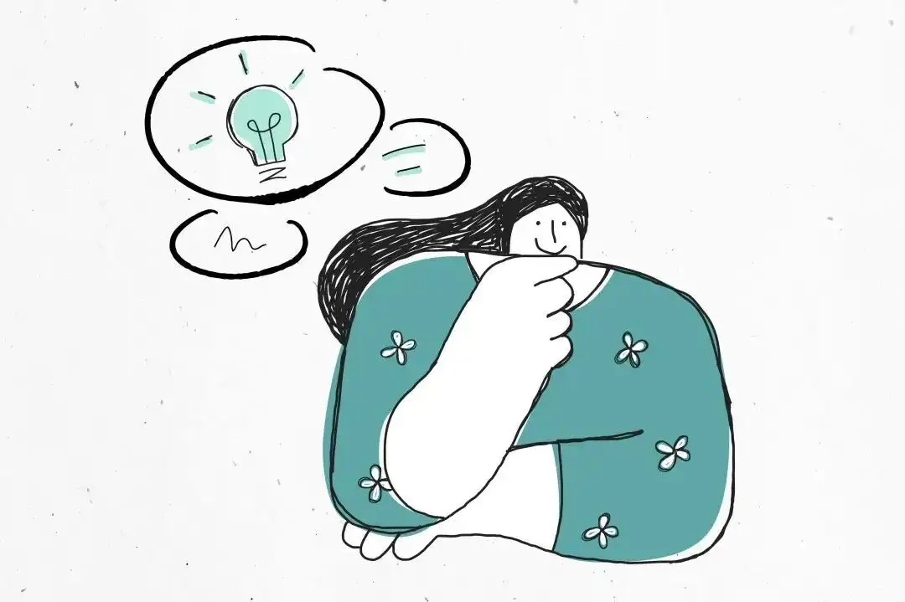
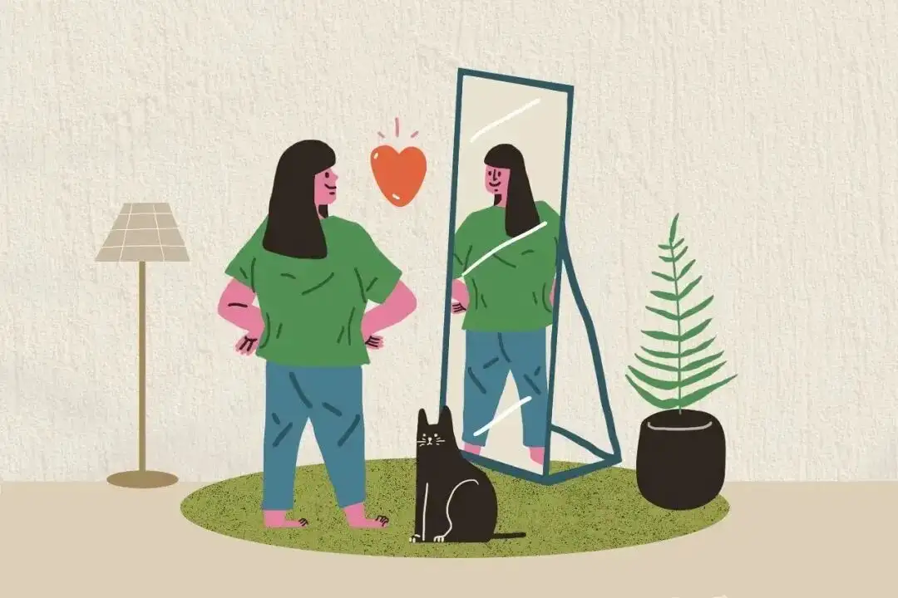
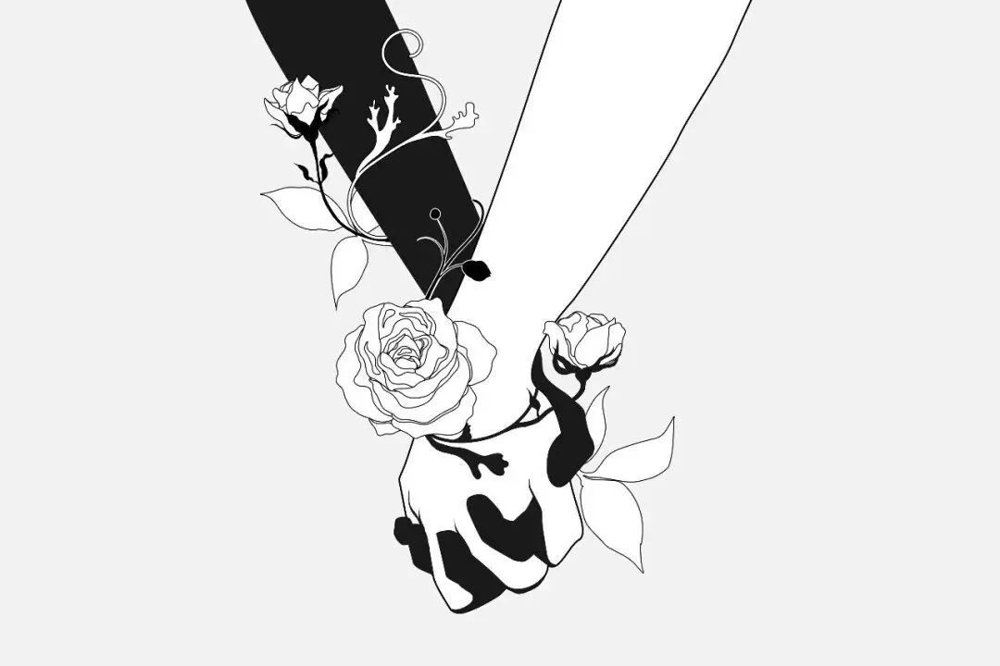

01
概念源起——社会心理学领域
受虐妇女综合征(Battered Women Syndrome，也译作受虐妇女综合症)，用于描述妇女因长期遭受伴侣在身体、情感以及性等方面的暴力及虐待所导致的一种心理状态，最初仅为社会心理学领域概念，属于创伤后应激障碍（即PTSD）的子类。
受虐妇女综合征最早由美国临床法医心理学家、女性主义先锋雷妮·沃克提出。在对400多名家庭暴力受害者及有关办案人员进行长期跟进后，沃克通过收集、分析被调查人员的思想与行为状态，最终得出结论：当一位妇女在长期持续遭受家庭暴力及虐待后，其心理及行为均会产生特殊变化（如丧失部分辨识能力及自我控制能力，对自身行为性质及可行为后果缺乏清晰的认知等），当暴力及虐待持续到临界程度时，患者最终会逆向转化为犯罪者，以暴制暴。
通常，受虐妇女综合征具有一下两种常见特征：
（一）暴力循环 (cycle of violence)
家庭暴力及虐待存在循环性。在周而复始的家庭暴力中，暴力行为的循环发生可分为以下3个阶段：
1. 双方关系日益紧张及危机感日益增加
2. 严重暴力行为的发生
3. “爱的忏悔”
正因为这种循环性，长期遭受家庭暴力的妇女常常能够较为准确的预见或判断下一次暴力的开始时间，即受害者对即将发生的暴力行为有着较为清楚的认知。

（二）习得性无助（learned helpless）
该理论最先源自于心理学者沙利格曼在20世纪60年代所进行的一个实验。在该实验中，沙利格曼将几只小狗关入一个通电的铁笼子中，随意调整电流频率。在经过一段时间的无用挣扎后，铁笼中的小狗因无法逃离紧锁的笼子，最终放弃挣扎，仅将脸部紧贴于地面，以避免承受更大的痛苦。实验结束后，即便将铁笼打开，笼中的小狗也不再有逃离的意识。
沃克将此概念用以解释在暴力关系中，受虐妇女常常很难凭借个人力量摆脱此种关系的原因。长期遭受暴力与虐待削弱了受害者妇女的能动性，迫使她们逐渐变得消极、被动，不再相信自己可以凭借努力改变现状，失去了逃离暴力的信心。
“
有关家庭暴力受害者的心理状态，及“难以逃离暴力关系的原因”等详细内容，点击下方链接可参见过往推送：Avoice公益课堂 | 从心理学视角解构家暴

02
发展演变——法律领域
随着性别平等与女性保护的发展，从社区庇护所的建立，到保护令、专门法律等制度的问世，数次反对家庭暴力的浪潮均为受虐妇女给予了不同程度、不同方面的帮助与支持。在此过程中，“受虐妇女综合征”这一概念被家庭暴力领域学者、律师多次运用，在刑事诉讼程序中作为抗辩事由，论证受害妇女以暴制暴、伤害或杀害施暴者的合理性或免责性。在司法与立法实践中，“受虐妇女综合征”也逐渐与正当防卫相联系，进而从最初纯粹的社会心理学概念，进入了法律领域，最终演变成为法律概念。1994年，美国国会通过的《针对妇女暴力法》中取得的重要突破，即为明确要求法官在审理案件时消除性别偏见，并改变对受虐妇女综合征有关案件中正当防卫的理解。目前，美国大多数州法院都明确表示接受“受虐妇女综合征”作为专家证据。
03
识别方式
研究证明，以下六组标准可以用于判断是否存在“受虐妇女综合征”，其中前三组症状与创伤后应激障碍相同：
1. 创伤事件的侵入性回忆
即无论此时此刻是否经受相同的刺激，受害者会通过噩梦、白日梦、幻觉、画面闪回等生理反应重复体验创伤性事件，仿佛依旧“正在发生”。
2. 过度兴奋和高度焦虑
对进一步伤害的过度警惕，因此难以入睡或保持睡眠状态，持续性易怒及焦虑，注意力无法集中等。
3. 回避行为和麻木情绪
采取一切可能的方式避免情况进一步恶化，努力避免接触与暴力创伤相关的话题、地点或人，对社交活动的兴趣及参与显著减少，对未来的展望与期待极其有限，活动范围明显受到施暴者的限制。常见回避行为包括抑郁、减少活动、与他人隔绝等。
4. 施虐者控制、孤立妇女，破坏其人际关系
施虐者通过各种手段、途径对受虐妇女实施操纵，包括言语怒骂、暴力威胁（包括以自杀或侵害女性亲友）、控制消费、限制其与家人和朋友的会面、强制“陪伴”其上下班、限制或禁止妇女单独外出、过于频繁的电话联系等。上述行为的频繁发生最终将导致受虐女性很难与除了施暴者之外的家人或朋友取得联系，并出于减少暴力发生、保护家人朋友以及宠物等目的屈服于施虐者的操纵。
5. 身体上的不适及对自我身体形象的消极态度
各种类型的暴力均会对妇女的身心健康产生影响，甚至进一步影响其个人形象，并打击、伤害受虐妇女的自尊。具体表现包括对自己的外貌、体重不满意，经常性的控制食物摄入，甚至出现厌食症或贪食症等。
6. 性相关问题
施虐者常通过性胁迫来羞辱、胁迫妇女，从而完成或加强心理控制。
04
幸存者治疗与赋权计划
幸存者治疗与赋权计划(下简称为STEPs)是一个精心设计的、经过科学验证的心理治疗计划，其致力于帮助家庭暴力受害者女性更好的理解暴力行为对生活、心理状态及行为的影响，并进一步提供应对暴力关系的建议。STEPs本质属于心理教育，其通过减少心理困惑、重新调解情绪而达到心理治疗效果，非精神健康领域的专业人员亦可在经过培训后组织、实施该计划。
STEPs通常由专门组织/领导者带领12人左右的家庭暴力受害者以小组会议/讨论的方式进行，每次会议均由下列三个部分构成：
1. 知识科普：提供关于家庭暴力及其影响的信息;
2. 讨论交流：参与者就亲身经历展开讨论并交流解决方案；
3. 技能培养：专门组织/领导者传授特殊技能，用以保护并帮助她们康复。

STEPs一共由12个独立单元组成，所有步骤都以当前的女权主义思想与创伤理论为基础，在实行过程中没有严格的顺序要求。单元前部分突出家庭暴力所伴随的歧视与压迫对妇女生活的消极影响，并强调妇女需要找回自己在持续经受虐待、暴力过程中被磨灭、剥夺的力量来摆脱、克服这些影响；后部分则从针对受虐妇女综合征的相关研究中，总结经验教训，从而克服亲密关系的暴力所带来的心理影响。
→此处仅就部分单元所涉及的知识科普及技能培养进行简单介绍：
● 界定家庭暴力
1. 了解谈及家庭暴力时使用的不同术语，学会定义女性所经历的家庭暴力的类型（包括身体虐待、性虐待、心理虐待、跟踪与骚扰行为、对孩子等第三方的暴力、针对宠物及财产的暴力等）；
2. 识别所经历的家庭暴力类别，明确该类暴力造成了的结果，停止自我否认、最小化所经历的暴力。
● 克服不良思维，制定安全计划
1. 了解如何采取尽可能多的安全措施/计划，分辨阻却积极行动的思维模式；
2. 拒绝施暴者强加的责备，停止相信、接受施暴者所告知、强加的一切；
3. 安全措施包括但不限于：
①设计实际可执行的安全计划：大多数暴力行为都在家中开始，可以此为出发点设计详细的逃离步骤，确定可以前往的安全地区（如朋友、家人住处等），事先准备好逃离后自己（及孩子）所需要的物品；
②排练逃跑：许多受害妇女不了解自己所拥有的合法权益，轻信伴侣带走孩子、占据妇女所有财产等威胁。可以事先携带个人的财产记录、就业信息等相关资料向律师、社区工作者等寻求咨询；
③了解有关法律规定。
“
详细介绍点击下方链接可参见过往推文：Avoice公益课堂 | 家庭暴力的定义与有效应对

● 思考、感受和行动
1. 三种异常的思维模式：
①消极看待自己及他人：不自觉地相信自己毫无价值，并不停致力于寻找证据来佐证这一观点；
②不断扩大或恶化负面情绪：表面看似合乎逻辑、贴近现实但本质上在不断激化或扩大化消极情绪，支持、认可对自己或他人的消极评价或看法，在极端情况下可能成为难以停止的强迫性思维模式；
③非理性思维：对自己或他人给予不切实际的评价，包括但不限于夸大事实、否认或最小化施暴者的行为、过分强调消极的一面、给自己或他人贴上标签。有时，非理性行为可以通过频繁使用绝对化词语来识别，如“总是”、“从不”、“永远”、“没有”或“一切”等词。
2. 打破、走出异常思维模式：可尝试通过以下方式应对自己的消极思维，并将其转换为积极、充满希望的观念：
①具体、详细的思考；
②查看是否有证据支撑；
③质疑自己的消极信念；
④听取他人的意见；
⑤学会为自己感到愉悦；
⑥了解、思考自己思维模式的起源。

3. 技能培养：
“思维日记”，记录自己日常生活中自然而然产生的想法、分析其背后的思维模式以及该思维模式如何对自己的感受与行为产生影响。
在写下自己的想法后，判断其是否属于针对自己或他人的消极想法、是否是荒谬或非理性的。
● 积极思考，控制愤怒
1. 知识科普——了解愤怒
愤怒通常来自非理性或理性但消极的思维模式。愤怒的失控通常是源于引起愤怒情绪的小事件没有得到立即处理，从而逐渐累积直至爆发。长期生活在暴力关系中的人常常为了避免遭受施虐者的暴力压抑自己的愤怒情绪，甚至部分长期受虐的女性已经习惯于或擅长于压抑、控制自己愤怒的感觉。然而，被压抑的愤怒并不会直接消失，而是会导致最终的间接性积聚与爆炸。许多长期遭受暴力的妇女会“沉迷”于不断思考、回想自己所经历的不公平的一切，纠结于如何从施暴者处得到公正的对待。长期被上述思绪所束缚，容易对妇女正常生活的继续造成阻碍。用积极的想法代替消极的想法来控制这些感觉是摆脱愤怒的重要一步，而不被暴力遭遇所引起的愤怒所束缚，是经历家庭暴力的妇女从“受害者”转变为“幸存者(survivor)”的必要步骤。
2. 技能培养：停止思考
通过转移注意力、用积极的想法替代等方式，从循环往复的负面、消极思绪中摆脱出来。
● 正确追寻想要的事物
1. 自信训练：弄清楚你想要的是什么，如何有效地尝试去得到它，以及如何在穷尽所有方法而无果时，接受自己的无能为力。
2. 将愤怒转化为自信：表达自己为什么感到愤怒，并诚实地解释你是如何被他们的行为影响的，而不是单纯的辱骂、指责或输出情绪。
3. 自信清单：分别列下自己能够表现出自信或表露情绪化的具体情形。

● 健康关系的建立
设定界限：界定一方可以期待另一方给予帮助的范围与程度，以及一方可以从另一方处获得多少，在继续给予他人帮助的同时，防止利用他人或被他人利用。
平等关系并不意味着机械地追究对等，而是意味着每一方都为关系的维护贡献特别的实务，并且必须因为他或她的贡献而受到尊重。大多数人都需要拥有个人空间来自由地思考和行动。在平等的关系中，每个人都能够按照自己的意愿与希望进行协商，确认、决定在关系中扮演的角色与承担的任务。如果存在必须由其中一方所完成的任务，则应该通过沟通、协商做出决定，而不是单存的依据性别不同而分配。

05
参考文献
[1]付胥宇.“受虐妇女综合症”的刑事责任减免意义:美国经验及启示[J].北方法学,2018,12(06):63-77.DOI:10.13893/j.cnki.bffx.2018.06.007.
[2]李华.“受虐妇女综合症”——女性主义对传统意义正当防卫的挑战[J].中华女子学院学报,1999(04):17-21.DOI:10.13277/j.cnki.jcwu.1999.04.008.
[3]孟然. 论受虐妇女综合症的性质及认定[D].华中科技大学,2017.
[4]赵颖.美国警察针对家庭暴力的逮捕政策及干预模式研究[J].中国人民公安大学学报(社会科学版),2005(01):151-156.
[5]Lenore E. A. Walker, EdD. The Battered Woman Syndrome - Hacettepe. https://yunus.hacettepe.edu.tr/~cin/Criticism%20of%20the%20Western%20Society%20&%20Civilization%20-%20Collection%205/Domestic%20Violence/Walker%20-%20The%20Battered%20Woman%20Syndrome%20(2009).pdf.
文字 I 林盈洁 钱思宇 孙佳怡
排版 I 韩瑞洋
图片 I rawpixels